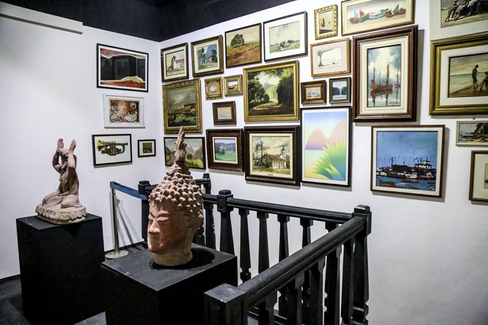

Locais para conhecer em Sobral
Museu do Eclipse
O Museu do Eclipse foi criado em 1999, pela Prefeitura Municipal de Sobral, para comemoração dos 80 anos do fenômeno que ajudou a comprovar a Teoria da Relatividade do físico e matemático Albert Einstein, ocorrido na manhã do dia 29 de maio de 1919. O Museu é hoje um ícone de divulgação histórica e científica, estando acessível para visitantes de todas as idades.
Pinacoteca
Pinacoteca de Sobral é um espaço expositivo de artes visuais. Com cerca de 250 obras expostas, em 10 espaços temáticos, contendo desenhos, gravuras, pinturas esculturas e elementos de origem arqueológica. Nomes como Dali, Picasso, Tarsila do Amaral, Raimundo Cela, Chico da Silva, Anita Mafalti, Djanira, Caribé, Bruno Giorgi, Ceschiatti e Almeida Jr são encontrados na Pinacoteca de Sobral
Museu Dom José
Museu pertencente à Diocese de Sobral considerado o quinto museu de arte sacra mais importante do Brasil, como mais de trinta mil peças em seu acervo. Fundado pelo bispo diocesano Dom José Tupinambá da Frota em 29 de março de 1951, o museu está instalado num palacete de estilo luso-brasileiro construído em 1844 pelo major João Pedro Bandeira de Melo.
Arco de Nossa Senhora de Fátima
Situado na Av. Dr. Guarany, é um dos monumentos que mais caracterizam a cidade. Foi construíudo por iniciativa de Dom José, em 1953, como marco da visita da imagem peregrina de Nossa Senhora de Fátima a Sobral. O arco foi projetado por Falb Rangel e executado por Francisco Frutuoso do Vale.

Espelho D'água
Localizado na margem esquerda do rio Acaraú, o Espelho d'água é um dos locais mais visitados da cidade por conta dos seus morros que são usados como "grandes escorregadores" pela população,não só por isso mas também porque é lá que fica um arco com o nome "Sobral" para que os visitantes saibam que estão na cidade.No local há duas quadras,um campo de futebol e vários equipamentos usados para a diversão das crianças.